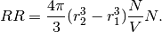

Correlation Function¶
Correlation function can be estimated in several ways. Common estimators are
- xi = DD / RR - 1
- xi = DD / DR - 1
- xi = (DD + RR - 2 DR) / RR
DD stands for the number of ‘data’ pairs in a distance bin  , and
RR stands for the number of ‘random’ pairs in the same distance bin. DR stands for
the number of ‘random’ to ‘data’ pairs in the same distance bin. ‘random’ points are defined as input without any clustering, it sort of describes the ‘expected’ pairs.
, and
RR stands for the number of ‘random’ pairs in the same distance bin. DR stands for
the number of ‘random’ to ‘data’ pairs in the same distance bin. ‘random’ points are defined as input without any clustering, it sort of describes the ‘expected’ pairs.
For point like input data and random, kdcount.correlat.paircount can calculate DD and RR, as the sum1 attribute of the result.
For a simple case, N positions in a periodic box of volume V,
